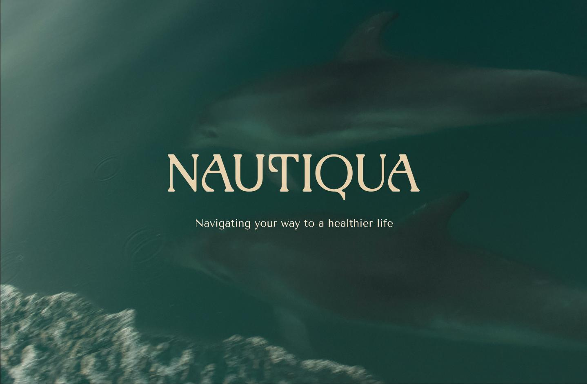

Nautiqua
Eco-luxury through aquaculture
My Roles
Tools
Duration
Team Members


Introduction
It's underwater
farming, basically
We were tasked with proposing a speculative campaign that attracts both public and investors’ attention to the benefits of aquaculture from New Zealand. There was a critical error we discovered in NZ’s existing aquaculture strategy: it is heavily domestically focused and overseas exports have not been growing over the years, despite the goals to reach global recognition and become a $3 billion industry by 2035.
(Department of Aquaculture, 2019 & 2022) & (Ministry for Primary Industries, 2023).
So we asked ourselves, how might we demonstrate the health and environmental benefits of NZ aquaculture to an overseas audience?